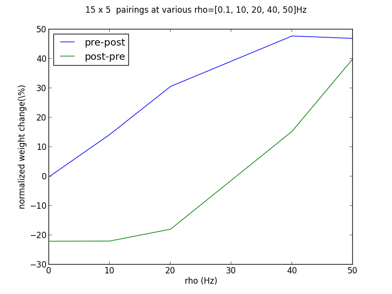
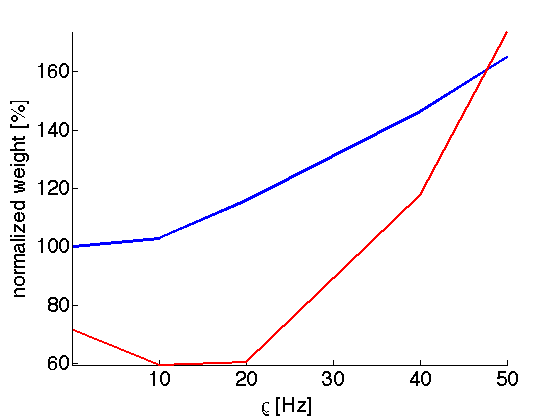
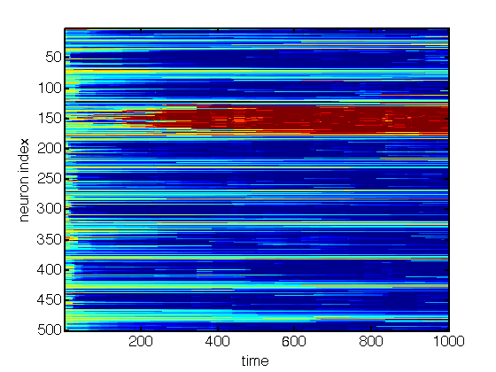

This is the readme for the NEURON with python and the matlab code for
implementation of the STDP rule by
Clopath C, Busing L, Vasilaki E, Gerstner W (2010) Connectivity
reflects coding: a model of voltage-based STDP with homeostasis.
Nat Neurosci 13:344-52
STDP mechanism added to the AlphaSynapse in NEURON.
Written by:
Ben Torben-Nielsen, Hebrew University
Claudia Clopath, Center for Theoretical Neuroscience, Columbia U.
*************************
Usage instructions:
0. NEURON needs to be installed with the --with-nrnpython option as
shown at http://www.neuron.yale.edu/neuron/download
Alternatively one of Eilif Mueller's versions can be installed:
http://neuralensemble.org/people/eilifmuller/software.html
1. Compile the mod-file, using: "nrnivmodl" in the directory
containing the files (implementation of the Clopath et al. STDP rule
and the neuron model)
2. Run the example code, using: "python claudia_pairing.py -i" in the
same directory. This will reproduce Figure 2B from the Clopath et
al. manuscript (the protocol is set to qualitatively produce
plasticity data from Sjoestroem et al., Neuron 32, 1149–1164 (2001);
15 times 5 pairings repeated at 0.1, 10,20,40,50 Hz, delta t =
+10ms,-10ms)

**************************
Parameter settings:
Here are the parameters of the plasticity rule:
tau_0 : time constant for filtering membrane potential v (called u in
the original)
tau_r : time constant for low-pass r
tau_y : time constant for post filter for potentiation
A_m : amplitude for depression
A_p : amplitude for potentiation
tetam : threshold for depression
tetap : threshold for potentiation
delay_steps : avoid interference from the AP, set to: AP_width / DT
The parameters in stdp_cc.mod are set such that given this neuron
model it reproduces qualitatively the data of Sjoestroem et al
(2001). The parameters should be adapted for each synapse type, brain
area and neuron model.
**************************
Matlab code:
- Run FrequencyDependence.m to see how the voltage triplet STDP
plasticity model reproduces the frequency dependency. The file calls
aEIF.m (the adaptive exponential integrate and fire model with
afterdepolarization) and VoTri.m (implementing the plasticity rule).

- Run RFdevelop.m to see how the plasticity rule develops receptive
fields. It calls aEIF.m (the adaptive exponential integrate and fire
model with afterdepolarization).
